Scaling Self-Play for End-to-End Driving：第一阶段深度解析
主线问题地图
| 核心理解问题 | 所需证据 | 正文位置 | 回答目标 |
|---|---|---|---|
| 为什么更多人类日志不能自动解决闭环失败？ | 引言中的状态覆盖与协变量偏移论证、DAgger 目标 | 第 1、5 节 | 区分数据规模问题和训练分布结构问题 |
| 为什么抽象像素模拟可能比照片级模拟更适合大规模自博弈？ | Gigapixel 状态、渲染系统、吞吐曲线 | 第 3 节 | 讲清保留的信息、舍弃的信息和算力交换 |
| 为什么强化学习只训练特权教师？ | 教师 25B 步、学生 150M 步、样本效率图 | 第 4、5 节 | 讲清探索和视觉学习的算力分工 |
| self-play DAgger 相对普通 DAgger 真正改变了什么？ | 多智能体目标公式、单智能体消融 | 第 5 节 | 讲清联合状态分布与监督密度的变化 |
| 抽象渲染中学到的行为如何迁移到真实相机图像？ | 冻结规划头、双层蒸馏、消融 | 第 7 节 | 讲清“保持决策器，只重学读图方式”的条件 |
| 论文所谓扩展规律由哪些证据支持？ | 训练曲线、HUGSIM、NAVSIM-v2、失败案例 | 第 8、11 节 | 区分实验区间趋势和普遍扩展定律 |
核心机制索引
- Gigapixel 抽象像素模拟器：以简化几何和 GPU 批处理保留规划结构，同时避免照片级渲染成本。
- 特权向量教师：用低维结构化观测和轻量网络承担海量强化学习探索。
- 自博弈数据聚合（self-play DAgger）：学生控制所有车辆，教师在学生诱发状态上提供逐智能体轨迹监督。
- 轨迹与动作双接口：自车使用轨迹规划和 LQR，其他车辆使用离散 jerk 动作头推进群体环境。
- 冻结规划头的感知适配：只改变真实图像的编码方式，尽量保存模拟中获得的闭环规划行为。
- 随自博弈经验增长的闭环收益：自博弈 DAgger 在论文考察区间继续提升，而固定分布行为克隆较早平台化。
1. 论文身份与核心研究矛盾
论文题为《Scaling Self-Play for End-to-End Driving》，arXiv 编号为 2606.19641，v1 于 2026 年 6 月 17 日提交。作者包括 Luke Rowe、Roger Girgis、Rodrigue de Schaetzen、Daphne Cornelisse、Alaap Grandhi、Felix Heide、Eugene Vinitsky、Christopher Pal 和 Liam Paull，机构包括 Mila、蒙特利尔大学、蒙特利尔理工、Torc Robotics、纽约大学坦登工程学院、麦克马斯特大学与普林斯顿大学。TeX 使用 CoRL 2026 模板，但官方 arXiv 页面没有提供录用证明，因此本文只把它称为 arXiv 预印本。
论文的起点不是“端到端模型还不够大”，而是训练分布与部署分布之间的结构性矛盾。行为克隆从固定的人类驾驶日志中学习，绝大多数样本位于正常驾驶轨迹附近。模型部署后只要出现小偏差，就会进入日志中稀少的状态；后续预测面对陌生输入，错误继续累积。增加更多同分布日志能够提高常规场景覆盖，却不能自动生成“由模型自己的错误诱发的状态”，所以状态覆盖不足与协变量偏移并非单纯的数据量问题。
闭环训练的关键变化是让策略的动作真正改变下一时刻的训练状态。模型会看到自己造成的偏离、冲突和恢复问题，并能够在这些位置得到新的学习信号。自博弈进一步让场景中许多车辆共享同一策略，训练分布不再由单个自车与固定交通参与者决定，而是由群体策略共同演化。这使让行、抢行、相互阻塞和恢复等多智能体状态可以随计算不断产生。
困难在于直接从像素做大规模强化学习非常昂贵。强化学习需要大量试错，每一步都要运行视觉骨干和规划头的前向、反向计算；同时已有高吞吐自博弈模拟器主要输出向量化鸟瞰特征，无法直接训练真实部署所需的相机输入策略。论文因此提出一条分工路线：先在低维向量空间训练廉价教师，再在高吞吐抽象像素环境中把教师的闭环行为蒸馏给视觉学生，最后只适配学生的感知模块以接收真实图像。
论文的核心主张可概括为六条。第一，学习规划行为不一定需要照片级模拟，保留道路、车辆、交通灯和相对几何可能已经足够。第二，Gigapixel 能以约 50k 智能体步每秒提供透视像素观测。第三，特权教师加自博弈 DAgger 比直接像素强化学习更符合大型端到端模型的计算结构。第四，让学生控制所有车辆会同时增加交互多样性和每一步可收集的监督数量。第五，冻结规划头并对齐真实与模拟特征，可以把闭环行为迁移到真实图像。第六，在本文给出的 150M 学生训练步范围内，自博弈经验增加与策略性能提升同步出现。
白话解释。 行为克隆像是只看优秀司机在正常道路上的录像；论文的方法则让大量虚拟车辆互相开，专门制造真实日志里少见的麻烦状态。一个能直接看到场景几何的老师先通过海量试错学会处理这些问题，再教一个只看图像的学生。最后，学生不重新学开车，只重新学习怎样把真实照片翻译成原来规划器熟悉的内部表示。
2. 三阶段总体方法与信息流
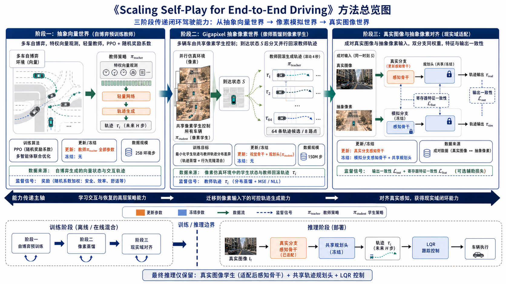
论文把训练拆成三个阶段。第一阶段训练特权向量教师。全局模拟状态记为 ，它包含智能体包围盒、静态地图折线和交通灯状态。对每个智能体 ，教师通过向量观测函数 得到邻近车辆、道路结构、信号灯和自车状态，并输出低层离散 jerk 动作。教师采用去中心化近端策略优化（Proximal Policy Optimization, PPO）。所有车辆共享同一策略，但每辆车的奖励权重随机化并作为策略条件，因此同一网络可以产生谨慎、积极等不同风格。
第二阶段训练像素学生。学生通过 接收四路抽象透视图像、最小自车状态、高层导航指令和奖励偏好条件。所有车辆都由学生策略控制，所以真实推进的状态来自学生群体本身。到达某个状态后，系统复制一个并行模拟器，让特权教师从相同状态向前滚动四秒，为每个智能体生成轨迹目标 。学生学习的不是“老师在标准状态会怎么做”，而是“老师在学生真正会到达的困难状态会如何恢复”。
第三阶段进行模拟到现实的感知适配。对于真实日志中的相机图像 ，系统从同一日志重建抽象场景并渲染对应的 Gigapixel 图像 ，形成成对数据。训练复制两份自博弈学生：模拟分支完全冻结，真实分支只更新感知骨干；规划头冻结并共享。真实分支既要输出与模拟分支一致的轨迹，也要在中间特征空间接近模拟分支。
这条链发生了三次有意的表示转换：从场景状态到教师的结构化向量观测；从同一状态到学生的抽象像素观测；从抽象像素到真实相机图像。论文没有让一个大型模型同时承担探索、视觉识别、规划和迁移，而是把探索放在低维空间，把闭环行为传递放在抽象像素空间，把真实外观学习放在最后的感知接口。
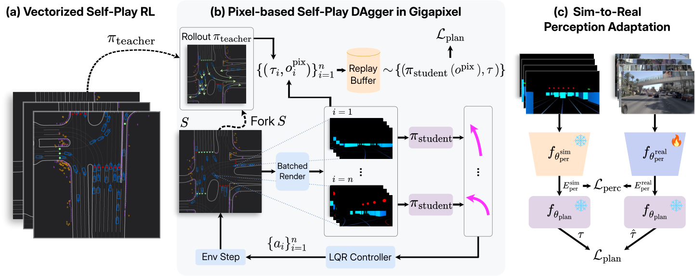
图中应重点观察：向量教师与像素学生读取同一场景的不同观测；学生控制环境分布；真实适配阶段只更新感知侧而保持规划侧冻结。
边界。 这种分工也引入教师—学生不对称。学生最多只能继承教师奖励与表示能够表达的行为。真实适配还依赖日志重建与抽象渲染之间具有可靠配准。论文证明这条链在 HUGSIM 和 NAVSIM-v2 上有效，但没有证明它能覆盖开放道路中的全部感知语义。
3. Gigapixel：为什么选择抽象像素
3.1 现有模拟器的两难
Gigaflow、PufferDrive 等抽象模拟器可以在 GPU 上并行运行大量环境，但主要输出结构化向量或鸟瞰表示；CARLA、HUGSIM 等能够提供更真实的像素画面，却很难以同样低的成本生成海量在策略分布上的经验。Gigapixel 的核心判断是：闭环规划行为和真实照片理解可以分开学习。前者主要依赖车辆相对位置、速度、朝向、道路边界、车道和交通灯，不一定需要纹理、材质、天气和精细光照。
Gigapixel 将全局状态写为
其中 表示智能体包围盒， 表示静态地图折线， 表示交通灯状态。车辆、行人、骑行者和静态障碍使用长方体，道路段使用平面条带，交通灯使用小球。每个被控制智能体拥有一个以自身为中心的 Madrona 世界和相机，从而直接得到自车视角的透视图像。
3.2 吞吐来自系统结构而不只是低画质
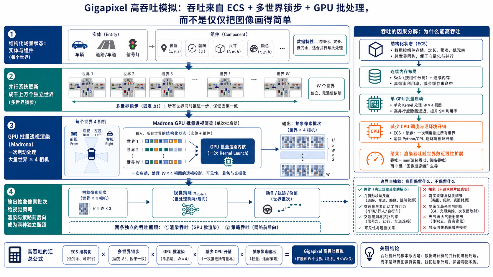
Madrona 使用实体—组件—系统架构。场景中的车辆、道路和信号灯都表示为少量类型化组件；相同的数据并行系统同时更新大量独立世界。数千个环境可以在一次 GPU 批处理中完成状态更新和渲染。渲染图像直接作为 GPU 张量暴露给学习框架，不需要每一步把图像搬到 CPU 再传回 GPU。
图像分辨率和相机数量可以按训练阶段调整。学生前 125M 步使用 分辨率，最后 25M 步提升到 。多卡训练时每个 rank 在本地渲染，不需要跨卡交换图像，因此吞吐接近随 GPU 数量线性扩展。系统支持光栅化和光线追踪；光栅化更快，但当策略换成 DrivoR 等较重视觉模型后，模型前向和反向传播成为主要瓶颈，渲染后端差异对总吞吐的影响缩小，因此论文默认使用光追版本。
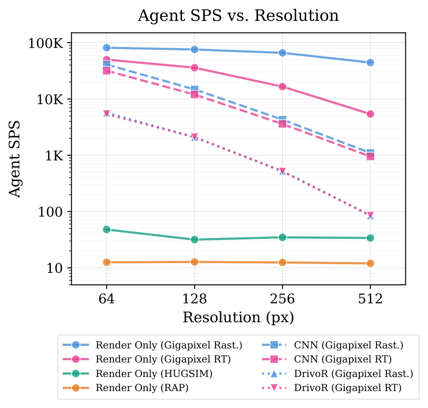
图中应重点观察：随着模型计算变重，光栅与光追的总训练吞吐差距收窄，说明瓶颈从渲染转向策略模型。
论文报告在单块 A100L 上达到约 50k 智能体步每秒。在 分辨率下，作者称 Gigapixel 光栅器约比基于高斯泼溅的 HUGSIM 快 ，约比 CPU 实现的 RAP 快 。这些数字说明它确实把像素闭环训练推入高吞吐区域，但不同模拟器的视觉质量、场景复杂度和硬件实现并不完全一致，倍数不应被解释为同等保真条件下的纯算法加速。
3.3 抽象掉了什么
Gigapixel 保留的是规划层结构：谁在哪里、朝向如何、道路边界在哪里、信号灯是什么状态、动作将如何改变下一时刻。它抽象掉的是大量感知层复杂性，包括真实材质、阴影、天气、相机噪声、动态模糊、细粒度类别线索，以及没有被包围盒和地图表达的物体。后续感知适配只能在成对数据覆盖的范围内补偿外观差异，不能证明这些信息对所有真实决策都不重要。
白话解释。 Gigapixel 是一个高速交通积木世界。车、路和灯画得简单，但避碰和让行依赖的几何关系仍然存在。作者用省下来的照片级渲染成本换取更多闭环交互，把“怎样看懂真实照片”留到最后单独处理。
4. 特权向量教师与奖励条件化
4.1 为什么强化学习放在教师上
在线强化学习的目标是
这里 是时刻 的奖励， 是折扣因子。它的作用是通过试错学习动作的长期后果。问题是强化学习通常需要数十亿乃至更多环境步，如果每一步都运行大型视觉 Transformer，计算成本会变得难以接受。
教师约有 2.7M 参数。自车状态、周围智能体集合、道路折线集合和交通灯集合分别通过两层多层感知机编码；三个可变长对象集合经过逐元素最大池化，形成与对象排列无关的固定长度摘要；这些摘要与自车嵌入拼接，再通过共享主干产生策略头和值函数头。低维结构化输入和小网络使教师可以承受 25B 智能体步训练。
教师直接获得邻近车辆的位置、尺寸、相对朝向和速度，附近道路段的几何与类型，以及交通灯位置和状态。这是明显的特权观测。为减少教师与学生的信息不对称，教师没有获得完整的人类路线，只得到左转、直行、右转或未知四类高层导航指令；指令由日志轨迹前方 20 米处的目标点计算。
4.2 动作与奖励条件化
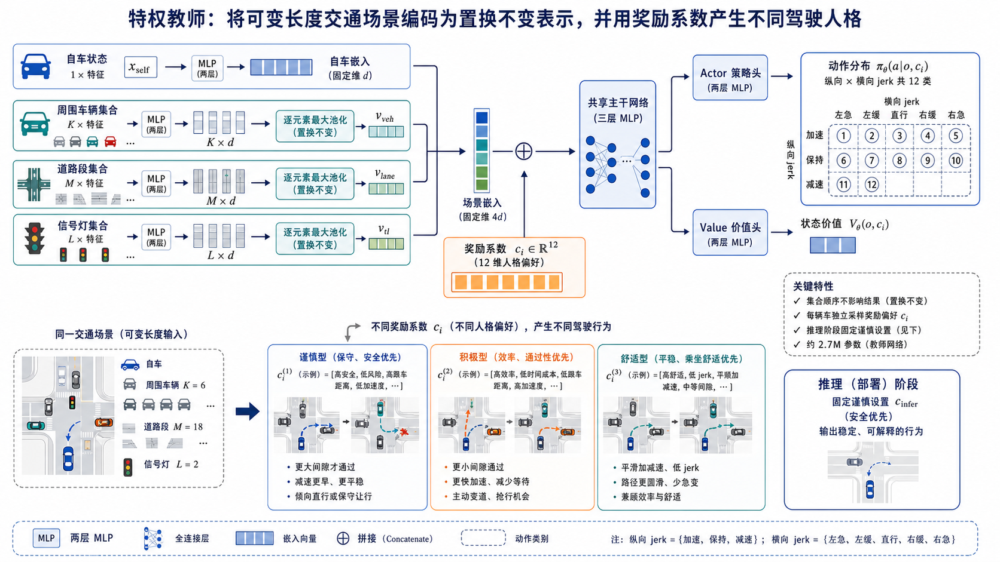
教师的动作空间是纵向 jerk 集合 与横向 jerk 集合 的笛卡尔积，共十二个离散动作。jerk 经积分得到加速度、速度和转向，模拟器对加速度、速度、转角和转角变化率施加物理限制。
每个智能体的奖励写为
包含碰撞、驶离道路、舒适性、车道朝向、车道居中、前进、闯红灯、时间成本、倒车、超速和到达目标等项。系数 在每个回合为每辆车随机采样，并作为策略输入。因此同一教师网络可以根据条件表现出不同安全、速度和舒适偏好，形成较为异质的自博弈群体。
训练还采用优势优先采样。大量驾驶经验只是信息量较低的直行片段，而转弯、让行和近碰撞恢复更稀少。作者按估计优势绝对值的 次方提高片段采样概率，设置 ，让更新预算更多聚焦于策略好坏差异明显的事件。
教师在 335,245 个 nuPlan 二十秒场景上训练，每张地图最多并行 512 个智能体，总计 环境步，使用 8 张 H200 约 24 小时。这证明低维教师能够承担大规模探索，但教师并不等于人类价值。奖励容易表达碰撞、道路边界和进度，却难以完整表达礼让意图、社会规范、沟通和不确定性；学生会继承这些设计偏置。
白话解释。 教师像一个直接读取车辆坐标表的轻量教练，不必先从图片识别车辆，因此可以进行海量试错。每辆虚拟车又拿到不同的安全、速度和舒适偏好，学生看到的对手不会完全同质。
5. self-play DAgger：核心算法
5.1 普通 DAgger 解决什么
普通数据集聚合（Dataset Aggregation, DAgger）的目标是
这里的关键不是简单复制专家，而是让学生先闭环行动，再由专家标注学生真正访问到的状态。状态分布 随学生策略变化，因此训练能够覆盖学生自身错误引出的恢复状态，缓解只在专家分布上训练造成的分布偏移。学生与专家可以使用不同观测函数：学生读取像素，专家读取结构化状态，但二者必须对应同一个世界状态 。边界是普通 DAgger 默认只有一个学习者改变环境，其余交通参与者通常来自日志回放或手工规则，无法让交互对手随学生共同演化。
白话解释。 普通 DAgger 不是只看老师以前怎么开，而是先让学生自己上路；学生开到哪里，老师就在那里给出正确动作。这样学生会专门练习自己容易开错的地方，但道路上的其他车辆通常仍是固定陪练。
5.2 自博弈 DAgger 改变了什么
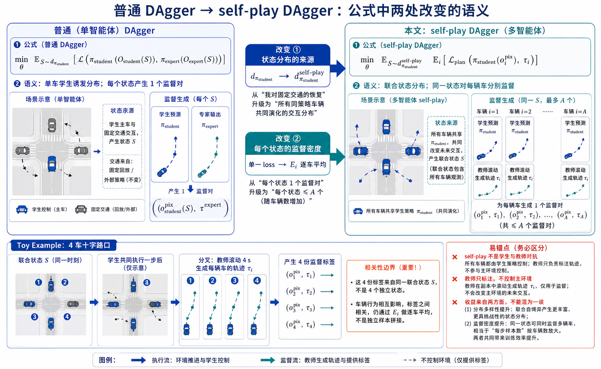
为简化记号，下式令 ，表示共享学生策略控制场景中全部车辆时形成的联合状态分布：
第一个变化是状态分布：不只是自车由学生控制，而是场景中的车辆共同由共享学生策略控制，因此状态由群体联合行为产生。第二个变化是监督密度：内层对智能体 求期望，一次联合 rollout 中的每辆车都产生训练样本。第三个变化是观测不对称：学生看抽象像素，教师看结构化向量，只要二者对应同一场景状态，就可以进行蒸馏。
该目标的外层期望决定“到哪些状态上提问”，内层期望决定“同一状态向多少辆车提问”，损失函数决定“学生要逼近教师的哪种输出”。若去掉自博弈状态分布，方法退化为单智能体 DAgger；若去掉对智能体的期望，每个模拟步只能从自车提取一份监督；若教师与学生的观测没有绑定同一状态，监督就会发生时空错配。论文后续又把动作级教师输出转换为轨迹级标签，因此实际训练使用的是 5.3 节的规划损失，而不是直接照搬上式的动作损失。
白话解释。 自博弈版本把固定陪练也换成学生的分身。所有车辆一起制造新的难题，老师再对场景里的每辆车分别批改，因此一次模拟推进既产生更复杂的互动，也产生更多监督样本。
5.3 分叉环境把低层动作变成轨迹标签
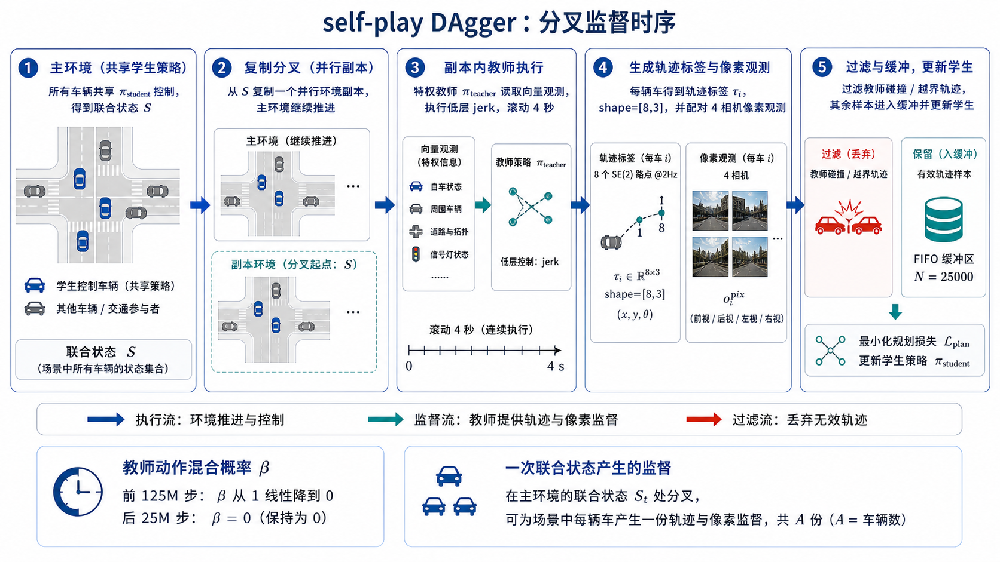
学生把环境推进到状态 后，系统复制一个并行模拟器，让教师从同一状态向前滚动 秒，为每辆车生成轨迹 。像素学生的目标为
这一步同时解决两个接口问题。强化学习教师输出低层 jerk 动作，而端到端规划器输出未来轨迹；让教师真实执行四秒后，动作序列自然转换成轨迹目标。另一方面，教师是在学生群体造成的状态上演示，不是在教师自己的舒适分布上离线生成数据。
学生使用 DrivoR 或单模态 DrivoR-Reg。视觉骨干为 DINOv2 ViT-S/14，解码器有 16 个寄存器词元、四层结构和 1024 维宽度。DrivoR 输出 64 条轨迹候选，DrivoR-Reg 输出一条。学生还增加独立动作查询和离散 jerk 动作头，用于控制非自车车辆。
5.4 混合策略、缓冲区和数据筛选
训练早期若让未收敛的学生立刻控制所有车辆，群体环境会迅速失控。论文每一步以概率 执行教师动作，以 执行学生动作； 在前 125M 步从 1 线性下降到 0，后 25M 步保持为 0。状态分布由教师主导逐渐过渡到完全由学生群体主导。
监督样本进入容量 25,000 的先进先出缓冲区。左转和右转轨迹损失权重是直行的五倍，以缓解直行样本占比过高。包含碰撞、驶离道路、此前已经犯规或不足完整四秒的教师轨迹会被过滤。过滤提高了标签质量，但也意味着模型不会学习教师在所有失败之后的行为；论文选择的是在困难状态上查询无违规轨迹，而不是保留所有闭环片段。
图 3 用轻量 CNN 比较直接像素自博弈强化学习与自博弈 DAgger。后者达到 Gigapixel Driving Score 60 所需的环境步约少 。这一结果支持“蒸馏更适合昂贵视觉学生”，但它只比较学生阶段的环境步，没有计入教师 25B 步预训练，也没有在完整 DrivoR 上运行同等的直接像素强化学习基线。
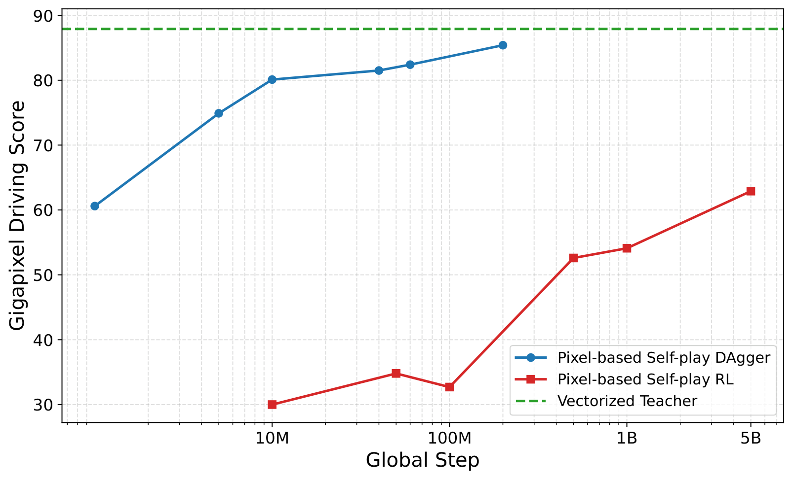
图中应重点观察：教师监督使学生迅速达到较高得分，但虚线教师本身已经通过大规模向量强化学习获得能力。
若去掉全体车辆由学生控制，方法退化为单智能体 DAgger，交互多样性和每步监督数量都会下降。若去掉分叉教师 rollout，低层动作专家无法自然产生四秒轨迹标签。若去掉混合策略退火，早期自博弈可能过于混乱。若去掉数据筛选，学生可能稳定模仿碰撞或不完整目标。
白话解释。 学生先和许多同学一起开车，开到哪里就把场景复制一份，请老师从这里演示未来四秒。老师专门回答学生真正会犯错的位置，而且一次能够给场景中的每辆车批改作业。
6. 轨迹、动作与闭环执行接口
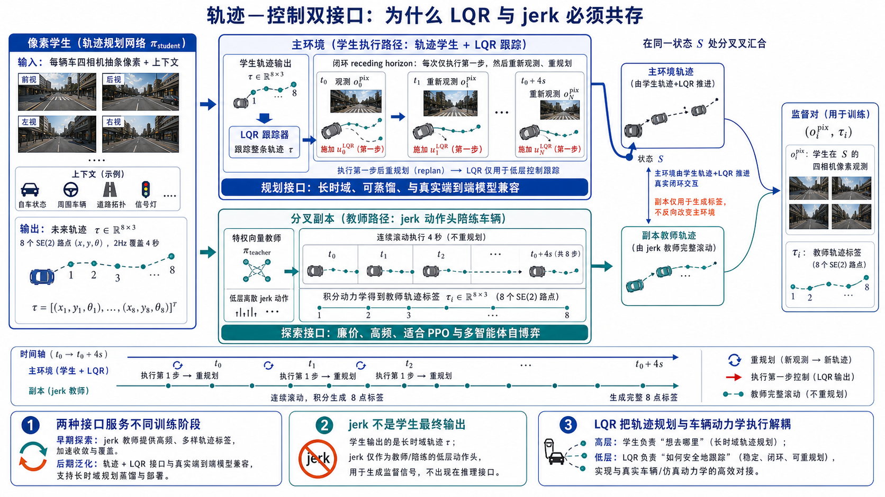
端到端策略输出未来轨迹
DrivoR 配置为四秒规划范围、2 Hz、八个未来路点，坐标位于自车后轴参考系。每个控制周期只执行当前轨迹的第一段，然后重新观察和规划，属于滚动时域闭环控制。
自车轨迹先插值到模拟器 秒的稠密参考，得到姿态、速度和曲率。纵向线性二次调节器（Linear Quadratic Regulator, LQR）根据速度误差输出目标加速度；横向 LQR 根据横向误差、航向误差和转角输出转向速率，并使用一秒前视。控制量进入运动学自行车模型，更新车辆姿态和速度。
教师输出的是十二类 jerk 动作。论文不尝试把教师网络内部直接改造成轨迹输出，而是让教师在分叉环境中真实执行四秒，并记录所产生的轨迹。对于非自车车辆，学生使用动作头驱动原生 jerk 动力学；原因是自车 LQR 的车辆几何参数按 nuPlan 自车标定，直接用于公交车或卡车会产生明显跟踪误差。
这种双接口是重要工程折中：主自车轨迹头对应最终端到端规划任务，大量陪练车辆使用廉价动作头生成群体状态。论文没有单独报告动作头和轨迹头之间的梯度冲突，也没有验证真实车辆执行器延迟和复杂动力学，因此从模拟轨迹到真实控制仍有额外工程距离。
白话解释。 老师说的是下一步踩多少、打多少方向；学生说的是未来四秒想走哪条线。作者让老师真的开四秒，把开出的线当答案。主车用控制器跟踪这条线，其他大量陪练车辆则用更便宜的动作接口推进。
7. 模拟到现实的感知适配
7.1 冻结规划头的目标
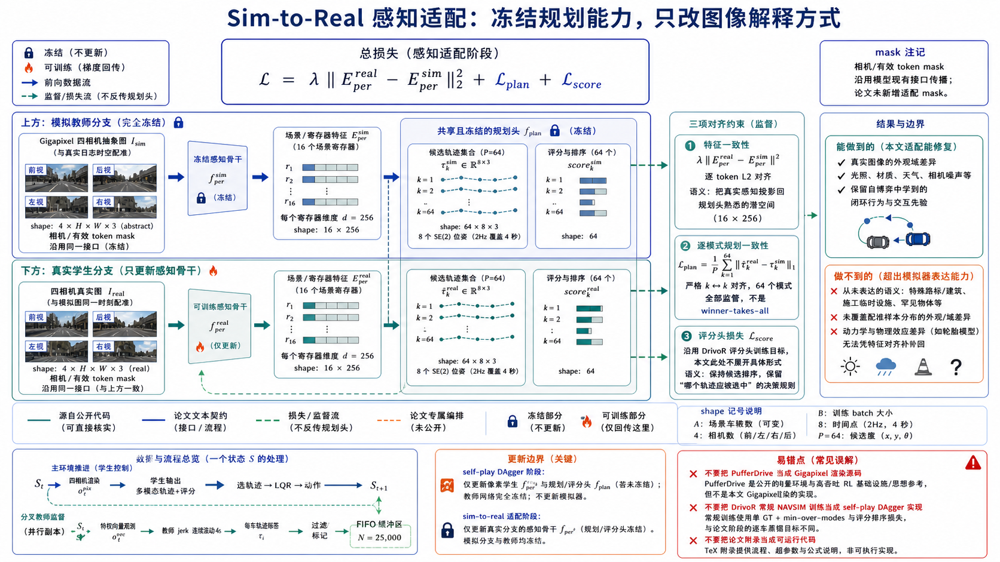
学生由感知骨干 和规划头 组成。适配阶段从相同权重复制两个分支：模拟教师 接收抽象渲染并完全冻结；真实学生 接收真实图像，只更新感知骨干，规划头冻结并共享。
成对数据集写为
其中两幅图像来自同一日志场景。完整目标为
第一项要求真实图像分支输出与模拟分支一致的规划；第二项要求感知特征进入规划头之前已经接近模拟参考。论文设置 。冻结规划头把任务限制为“真实图像如何编码成规划器熟悉的语义”，避免静态真实日志把已经学到的闭环决策重新拉回行为克隆分布。
7.2 多模态逐模式对齐
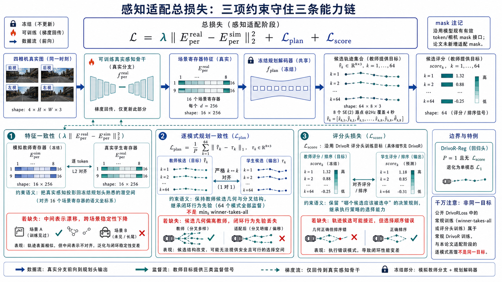
DrivoR 的模拟教师和真实学生各输出 条轨迹。适配不是用赢家通吃方式只匹配一条轨迹，而是让第 条学生候选直接回归第 条教师候选：
总损失还加入评分头损失。对于 DrivoR-Reg，，目标退化为单轨迹 回归。逐模式对齐试图保留模拟策略已经形成的候选结构，而不是只复制当前最优一条轨迹。
7.3 消融证据与边界
HUGSIM 消融中，自博弈 DAgger、特征 对齐和冻结规划头同时存在时，DrivoR-Reg 的平均 HD-Score 为 33.2。去掉特征对齐但仍冻结规划头，得分降至 18.5；进一步解冻规划头，降至 15.8。结果说明仅靠输出轨迹蒸馏不足以稳定连接真实图像与原规划器，而无约束地更新规划头会破坏自博弈获得的行为。
“无人工轨迹监督”不等于“无真实数据”。适配仍使用 NAVSIM 真实图像、地图和日志重建场景，评分式 DrivoR 的评分头还需要在 navtrain 上训练。成对重建若存在地图误差、动态物体缺失或时间不同步，特征对齐可能把错误结构写入真实感知。冻结规划头还意味着，如果真实世界需要模拟中从未学过的新决策，适配阶段无法补充。
白话解释。 作者不让学生在真实照片上重新学习驾驶，只让它重新学习怎么看。抽象图和真实图是同一个场景的两种画法；学生要把真实图翻译成旧规划器熟悉的内部语言，规划器冻结以避免驾驶习惯被改坏。
8. 扩展规律与关键定量证据
8.1 训练规模曲线
向量教师训练 25B 智能体步；像素学生训练 150M 步，其中 125M 步使用低分辨率，最后 25M 步使用高分辨率。图 4 显示 DrivoR-Reg 的自博弈 DAgger 随经验增长持续提升，在约 10M 步后超过行为克隆和单智能体 DAgger。行为克隆约在 100M 步附近平台化，因为继续执行教师并不会产生学生自身造成的新状态。
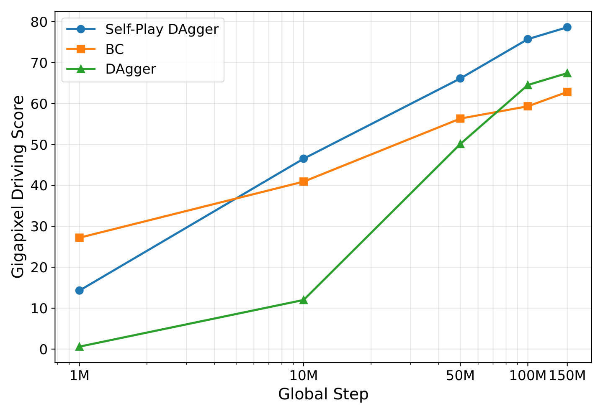
图中应重点观察：三种策略使用同一学生架构；行为克隆逐渐平台化，自博弈 DAgger 在论文考察区间仍然上升。
这支持的是特定系统、教师、模型和 150M 步区间内的经验趋势。论文没有拟合幂律指数，没有跨多个模型规模和多个数量级计算验证统一关系，也没有报告曲线误差条。因此“proportional gains”不能被解释为已经建立普遍扩展定律。
8.2 HUGSIM 闭环结果
Gigapixel-DrivoR 的平均路线完成率为 50.1，平均 HD-Score 为 38.5；行为克隆 DrivoR 的 HD-Score 为 35.7，提升 2.8。Gigapixel-DrivoR-Reg 的 HD-Score 为 33.2，行为克隆版本为 20.7，提升 12.5，约为 60% 相对增益。评分式多模态规划器本身较强，因此训练范式带来的绝对增益较小；单模态回归器更依赖闭环训练，增益更明显。
Extreme 难度层构成重要反例：行为克隆 DrivoR 得到 32.5，Gigapixel-DrivoR 只有 21.6。作者发现行为克隆模型具有高速偏置，常用更高速度摆脱试图制造碰撞的对抗车辆；其平均碰撞速度为 5.27 m/s，自博弈模型为 1.95 m/s，后者低约 。这说明单一排行榜分数可能奖励不安全但善于快速通过的策略，自博弈模型更谨慎时反而可能被对抗车辆堵住。
8.3 NAVSIM-v2 恢复状态结果
在 navhard 上，Gigapixel-DrivoR 的总 EPDMS 为 50.1，行为克隆 DrivoR 为 48.3；Gigapixel-DrivoR-Reg 为 29.5，行为克隆版本为 25.5。更关键的是 Stage 2，它从扰动后的非分布内姿态评估恢复能力：Gigapixel-DrivoR 从 59.4 提升到 63.5，Gigapixel-DrivoR-Reg 从 38.4 提升到 45.5。增益集中在恢复状态，与“闭环训练改善偏离状态鲁棒性”的主张一致。
加入 134k 合成恢复轨迹的 DrivoR with SimScale 总 EPDMS 达到 54.7，高于 Gigapixel-DrivoR。其 Stage 2 为 64.6，只比 Gigapixel-DrivoR 的 63.5 高 1.1。更稳妥的结论是：自博弈是一条不使用人类轨迹目标、能够随计算持续生成恢复经验的路线，但针对基准定制的离线恢复数据仍可能在总分上更有效。
8.4 训练策略与适配消融
HUGSIM 消融中，自博弈 DAgger 为 33.2，单智能体 DAgger 为 30.1，行为克隆为 18.6。自博弈与单智能体 DAgger 相差 3.1，支持“所有车辆由学生控制”带来额外收益；自博弈与行为克隆相差 14.6，说明在学生访问状态上查询教师是主要增益来源。论文还展示了对减速前车的绕行和道路边缘恢复案例，而行为克隆模型分别发生追尾和驶离道路。
论文没有报告多随机种子误差条、统计显著性或完整失败案例分布，也没有把教师预训练、模拟渲染和学生训练的总计算量统一归一化。实验支持方法有效，但不足以精确判断每个组件的独立因果贡献和总成本优势。
9. 组件拆解与真正创新
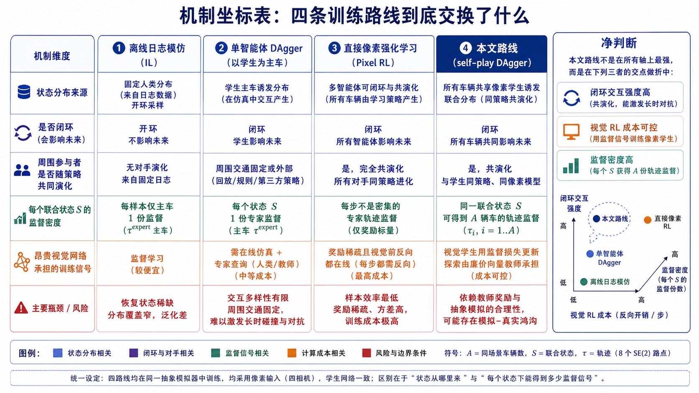
| 组件 | 类型 | 机制作用 | 直接证据 | 主要风险 |
|---|---|---|---|---|
| Gigapixel 抽象透视渲染 | 已有系统思想的新组合与扩展 | 把高吞吐自博弈延伸到像素输入 | 50k SPS、GPU 内数据链 | 抽象状态遗漏真实语义 |
| 特权向量 PPO 教师 | 复用并改进 Gigaflow 路线 | 廉价承担大规模探索 | 25B 步、2.7M 参数 | 奖励偏置被蒸馏给学生 |
| 多智能体 self-play DAgger | 主要算法创新 | 让群体联合分布演化，并逐智能体收集监督 | 目标公式、3.1 分消融 | 教师能力形成上限 |
| 分叉教师 rollout | 关键接口设计 | 把低层动作专家转换为轨迹专家 | 四秒轨迹监督 | 分叉成本未单独量化 |
| 混合策略、筛选和转弯加权 | DAgger 工程改进 | 稳定早期训练并提高有效样本比例 | 退火与过滤配置 | 筛选可能隐藏失败恢复 |
| 冻结规划头的双层适配 | 针对性组合 | 把真实图像映射到已有闭环表示 | 33.2、18.5、15.8 消融 | 依赖成对重建质量 |
| DrivoR、DINOv2、LQR、PPO | 直接复用 | 提供模型、控制和优化基础 | 方法与附录 | 结果可能依赖强基座 |
真正的新意不是某一个基础算法，而是三处连接。第一，用抽象像素模拟器把自博弈的状态覆盖能力带到视觉端到端模型。第二，用多智能体 DAgger 和分叉 rollout 把特权教师的低层闭环行为转换成学生所需的轨迹监督。第三，用冻结规划器的感知对齐把抽象世界中的行为迁移到真实图像。PPO、DINOv2、LQR、特征蒸馏和实体—组件系统都有前序来源，贡献主要体现在针对“像素自博弈成本过高”这一矛盾的系统性重组。
读者理解版。 论文先用便宜老师在海量交互中学会处理麻烦，再让昂贵的看图学生只在自己会到达的状态上模仿老师。模拟器负责把教学做得足够快，分叉 rollout 负责把老师的低层动作翻译成学生需要的未来轨迹，感知适配负责把抽象画面换成真实相机画面。三者分别解决规模、接口和现实部署问题。
10. 横向对比与学术定位
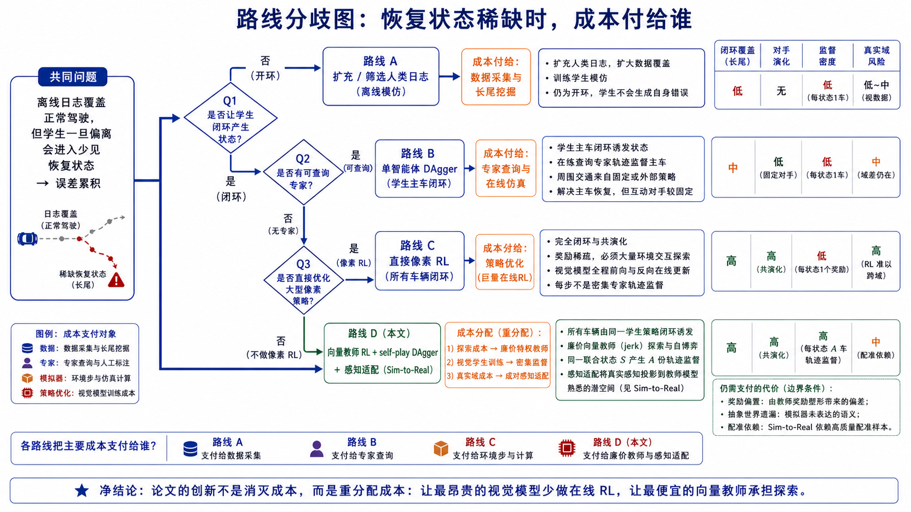
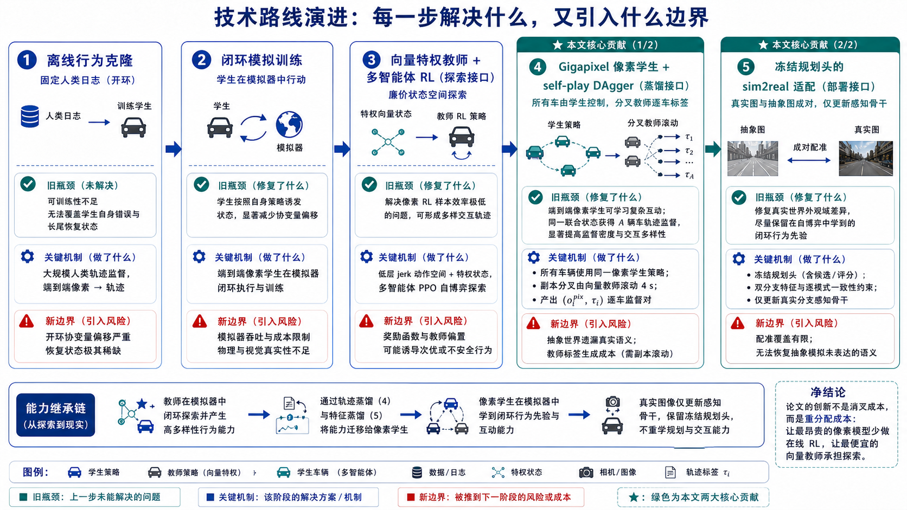
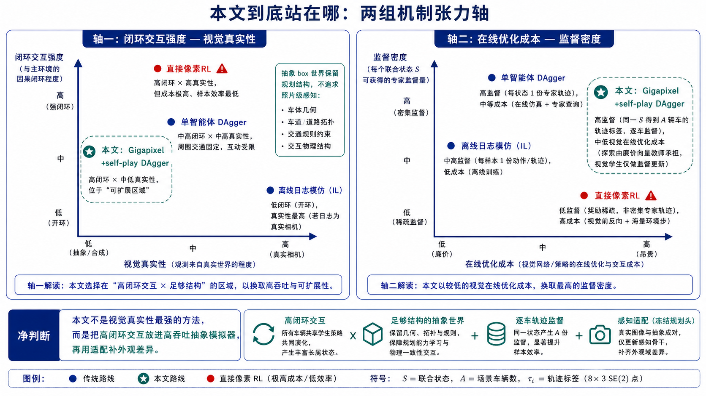
Gigaflow（arXiv:2502.03349）证明了大规模向量自博弈可以产生鲁棒驾驶行为。本文沿用其核心假设，但把问题推进到端到端像素策略：Gigaflow 直接对低维策略做强化学习，本文把这类策略保留为教师，再蒸馏到视觉规划器。2026 年的 BehaviorBench（arXiv:2605.10034）从评估角度提醒，扩大自博弈与计算规模不等于自动获得跨复杂度泛化；这与本文需要 HUGSIM、NAVSIM-v2 和 Extreme 层反例进行外部检验相呼应。
相对大规模行为克隆，本文共享“模型和数据规模能够提升端到端性能”的背景判断，但挑战“固定日志足以覆盖闭环状态”的假设。行为克隆的优点是真实外观、自然人类行为和训练简单；自博弈 DAgger 的优点是持续在学生诱发状态上生成标签，代价是需要模拟器、教师奖励、分叉 rollout 和现实适配链。
相对 SimScale 一类恢复数据增强，两者都认为偏离状态是关键。SimScale 离线构造扰动姿态和高分恢复轨迹，针对目标基准效率高；本文通过群体闭环交互自动产生恢复和多智能体冲突，覆盖可以随计算增长，但教师没有针对 NAVSIM-v2 指标优化。SimScale 在总 EPDMS 上更高，而 Stage 2 差距很小，说明定向挖掘与开放式自博弈是竞争路线，而非简单替代关系。
相对照片级闭环模拟，Gigapixel 把规划行为学习与真实外观学习拆开。照片级环境可以直接检验真实视觉闭环，但吞吐较低；Gigapixel 牺牲外观真实性换取交互规模，再用成对感知适配补回外观。成立条件是大部分闭环决策能力可以在抽象几何中学到，而且真实图像到这种几何语义的映射可以后置完成。
相对普通 DAgger，本文的核心差别是联合状态分布。普通驾驶 DAgger 常只让自车由学生控制，其他车辆日志回放或由规则控制；本文让共享学生控制所有车辆，训练场景随群体行为共同演化，并从每个智能体收集监督。论文自身 3.1 分消融是该改造最直接的证据，但尚不足以证明它在所有驾驶任务中必然优于单智能体 DAgger。
11. 系统性反驳与净判断
11.1 抽象世界可能遗漏决定性信息
- 被质疑主张：规划能力可以主要在包围盒世界中学习。
- 论文证据：适配后在 HUGSIM 和 NAVSIM-v2 获得竞争性结果。
- 不足：基准不能覆盖施工手势、临时标识、紧急车辆、恶劣天气和细粒度社会线索。
- 失败条件：决策依赖抽象状态未记录的外观语义时，规划器没有学过正确行为。
- 文献状态：未检索到针对本文的直接反证，此处是表示边界审查。
11.2 自博弈可能只是放大教师偏好
- 被质疑主张：自博弈自动生成丰富、自然且安全的行为。
- 论文证据：奖励随机化、群体交互和恢复指标提升。
- 不足：所有车辆共享相同结构，多样性主要来自有限奖励权重，不等于真实人类策略多样性。
- 失败条件：奖励未表达的礼让、沟通和社会规范不会因规模自动出现。
- 文献状态：BehaviorBench 对“规模不等于泛化”的观点提供间接支持。
11.3 “无人工轨迹监督”容易被误读
- 被质疑主张：不依赖人工轨迹监督即可获得竞争性能。
- 论文证据：学生轨迹目标来自教师，不直接回归人类轨迹。
- 不足：场景、初始状态、导航指令、真实适配图像和地图仍来自人类采集日志；评分头还使用
navtrain。 - 失败条件：没有真实日志与可重建地图时，场景初始化和适配链无法直接复用。
- 净解释：论文消除的是人类轨迹作为动作监督目标，而不是消除真实数据。
11.4 三千倍不是端到端总成本倍数
- 被质疑主张：自博弈 DAgger 比像素强化学习高效约 。
- 论文证据：CNN 学生达到得分 60 的环境步比较。
- 不足：教师已经消耗 25B 步强化学习，比较不含教师成本，也没有用完整 DrivoR 做直接强化学习基线。
- 净解释：该数字支持学生阶段的样本效率，不支持统一的总算力比例。
11.5 扩展曲线不足以建立普遍定律
- 被质疑主张：自博弈性能随规模成比例提升。
- 论文证据：150M 步区间内持续上升，行为克隆平台化。
- 不足：没有跨模型规模、教师规模、场景规模和多个数量级计算拟合，也没有误差条。
- 失败条件：教师上限、模拟覆盖、缓冲容量或模型容量达到瓶颈后，曲线可能平台化。
11.6 基准分数不等同于安全
- 被质疑主张：更高闭环分数代表更安全的规划。
- 论文证据：平均 HUGSIM 分数领先，碰撞速度更低。
- 反例：Extreme 层中高速行为克隆模型得分更高，表明指标可能奖励抢先通过。
- 净解释：需要同时查看完成率、碰撞、碰撞速度、舒适性和失败类型，而不能只看聚合分数。
11.7 冻结规划头可能限制真实适应
- 被质疑主张：只适配感知是最佳策略。
- 论文证据：当前消融中解冻规划头使分数下降。
- 不足：它只证明无约束联合适配在当前数据和优化设置下有害，不证明所有受约束规划适配都无益。
- 失败条件：真实世界需要模拟中没有的新决策规则时，完全冻结会阻止更新。
11.8 训练环境并非完全自博弈
- 被质疑主张：群体自博弈持续产生开放式交互课程。
- 论文证据：车辆默认由策略控制。
- 不足：行人、骑行者和交通灯日志回放，部分车辆可设为非反应式回放，初始场景来自 nuPlan 日志。
- 失败条件：关键困难来自非车辆参与者或新型初始配置时，课程不会自动扩展。
11.9 反驳后的净判断
仍然站得住的贡献是：论文把高吞吐抽象像素模拟、特权教师、多智能体 DAgger、轨迹接口转换和冻结规划器的感知适配连成一条可运行链。多智能体目标公式与分叉轨迹监督清楚回答了“如何让大型视觉规划器在自己的闭环分布上得到高质量标签”。HUGSIM、NAVSIM-v2 Stage 2 和训练策略消融共同支持闭环训练优于固定日志模仿。
需要更强证据的主张包括：扩展趋势能否超出当前步数区间；抽象像素能否覆盖更开放的真实世界；总计算成本相对其他路线是否占优；奖励条件化群体能否代表真实交通参与者。论文没有解决从零生成初始场景、让行人与骑行者参与自博弈、直接训练原生轨迹强化学习策略、以价值约束方式引入人类数据，以及在真实车辆动力学和真实道路闭环中验证等问题。
白话解释。 最可信的结论不是“以后不需要真实数据或人类驾驶”，而是“闭环经验可以先在便宜的抽象世界中大规模制造，再通过教师和感知接口交给看真实图像的模型”。论文证明这条路线能走通，但没有证明抽象世界包含真实驾驶的一切，也没有证明规模继续增加时收益永不饱和。
12. 结论与可迁移启示
论文把两个问题分开处理：闭环策略需要在自身诱发状态上学习，真实感知需要处理复杂外观。Gigapixel 和 self-play DAgger 解决前者，感知适配解决后者。最重要的设计原则是算力与表示分工：让低维小模型承担昂贵探索，让大型视觉模型承担高密度监督学习，让真实数据阶段尽量只改变输入解释，不破坏已经获得的闭环决策。
这一原则可以迁移到其他具身任务。如果真实感知昂贵，但决策所需结构能够在抽象环境中表达，可以先构造高吞吐结构化世界；如果专家动作接口与学生输出接口不同，可以通过环境 rollout 把专家行为转换成学生需要的序列目标；如果模拟到现实主要是观测变化，可以冻结决策模块并用成对特征对齐迁移。成立条件是抽象状态包含关键决策变量、教师奖励足够可信、成对数据可以构造，而且最终仍要用能够暴露闭环失败的现实基准验证。
这篇论文更适合被定位为强系统与训练范式工作，而不是新的基础强化学习算法或严格扩展理论。它通过对模拟吞吐、教师—学生接口、多智能体数据聚合和感知适配的组合，展示了一条不以人类轨迹为动作监督目标、同时保持像素端到端部署形式的可扩展路径。其最大贡献是把“自博弈适用于端到端视觉驾驶”从概念变成有系统、有公式、有消融、有现实基准证据的完整方法链。
13. 代码与实现证据
论文专属 Gigapixel 仓库在本次解析获取的 README 中明确写着“Code will be released soon”。因此，代码分析必须拆成三种证据等级：论文 TeX 和附录给出的实现契约；公开 DrivoR 源码给出的模型、特征和常规损失接口；PufferDrive 2.0 给出的先行高速向量模拟与 RL 基础设施。联合状态分叉、Gigapixel 渲染胶水、教师训练脚本、FIFO 数据编排和双分支适配代码均未公开，不能从依赖仓库反推为论文实现。
13.1 DrivoR 模型网络结构
公开默认配置启用前、左、右、后四路相机。drivor_model.py 为每路相机建立可学习场景寄存器，配置中 num_scene_tokens=16、tf_d_model=256；图像骨干使用 ViT-S/14 DINOv2 reg4，并提供 LoRA 配置。轨迹端使用 64 个候选查询、8 个未来位姿和 4 次 refinement，因而核心输出接口可概括为轨迹张量 与候选评分 。公开默认图像尺寸 属于 DrivoR/NAVSIM 配置，不应与论文 Gigapixel 阶段的 混同。
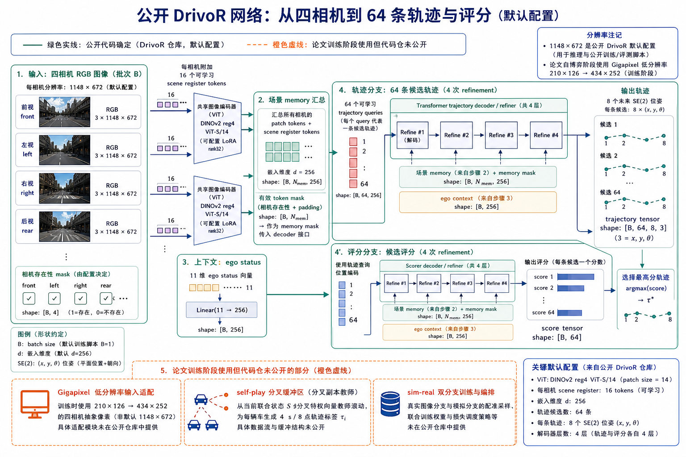
13.2 self-play DAgger 数据流
论文的数据流以联合状态 为中心。主环境把场景中 辆车批量渲染为概念张量 ，共享学生输出每车轨迹并由 LQR 推进。监督分支从同一 复制环境，教师读取特权向量观测并完整滚动四秒，得到 的逐车标签。有效样本与像素观测、上下文和奖励人格一起进入容量 25,000 的 FIFO 缓冲区，再以训练批次 计算规划损失。可变车辆数需要 agent mask 或等价有效性表示，但论文没有公开其具体张量实现。
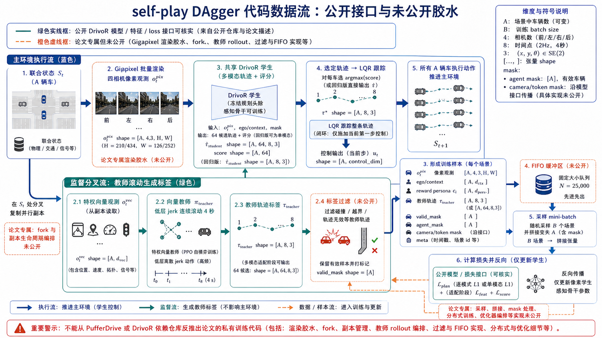
13.3 模块与源码映射
公开 DrivoR 文件可分别定位模型结构、特征构造、Agent 封装、常规损失和默认配置；PufferDrive 2.0 只能作为高速向量驾驶环境与 RL 工程背景。Gigapixel README 证明仓库身份与“代码待发布”状态，但没有可执行核心实现。最重要的审计原则是：接口兼容不等于实现相同，先行系统不等于论文源码，附录伪代码也不等于可复现训练编排。
13.4 训练与推理全结构
四个阶段的参数边界不同。教师阶段通过 PPO 更新向量教师；self-play DAgger 阶段冻结教师并更新像素学生；感知适配阶段冻结模拟分支和规划/评分模块，只更新真实感知骨干；最终部署只保留真实感知骨干、规划/评分头与 LQR，不需要教师、分叉环境、FIFO 或模拟分支。把训练期辅助路径误画进部署路径，会严重高估系统运行时复杂度。
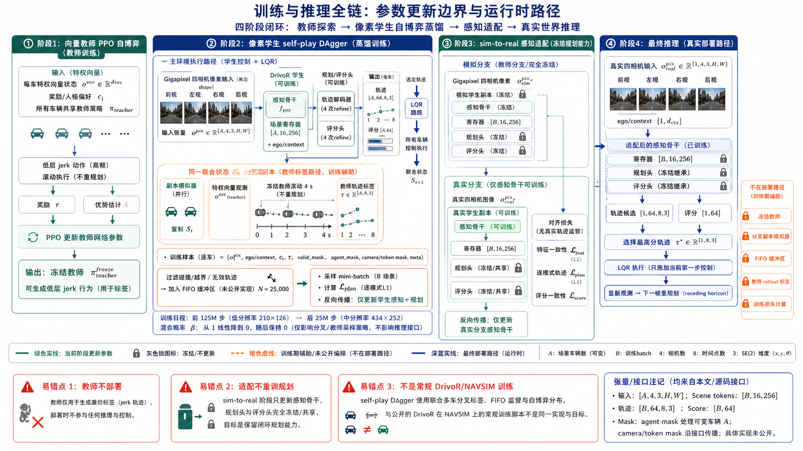
13.5 关键 loss 与公式对应
论文适配阶段的多模态轨迹蒸馏使用严格的逐模式对齐：学生第 条候选直接回归教师第 条候选，64 个模式全部获得监督。公开 DrivoRLoss 的常规 DrivoR 训练则面向单一真实轨迹，在多候选中选择最接近目标的模式，并可累计 refinement 中间损失；评分模块根据候选驾驶质量训练排序。两者复用轨迹与评分接口，但监督结构不同。特征 是论文 sim-real 双分支适配额外加入的约束，不由公开常规 DrivoRLoss 主流程表达。
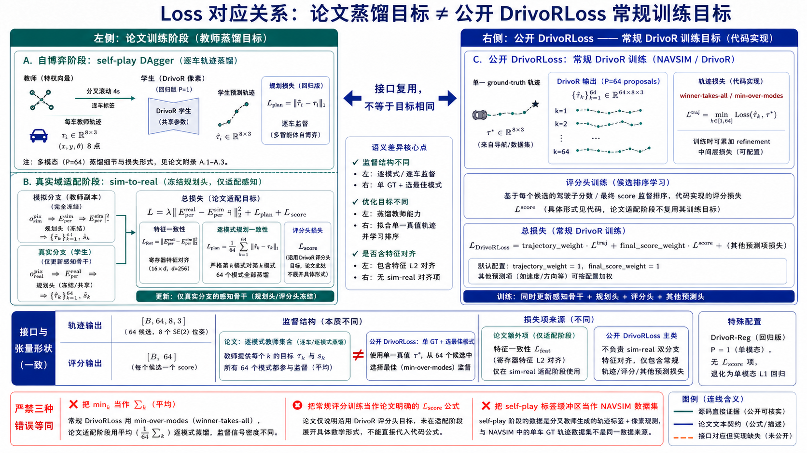
来源说明：论文机制、公式和实验结论基于本次任务下载的 arXiv TeX source、官方 PDF 与原始 figure 文件。代码部分区分论文实现契约、公开 DrivoR 源码、PufferDrive 2.0 背景实现与 Gigapixel 尚未公开的论文专属模块；自制图仅用于加深机制理解，不替代正文证据。
身份边界：论文使用 CoRL 2026 模板，但现有证据只确认 arXiv 预印本，报告不把模板当作录用证明。